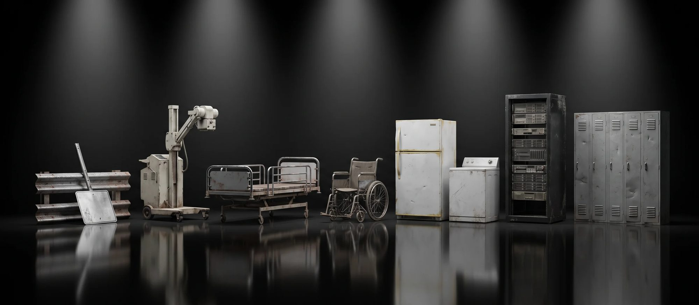

Road and depot steel, whitegoods, X-ray and medical equipment, furniture, racking, plant and offcuts, from councils, homes, business, institutions and industry. If it's mostly metal, we collect it, do the lifting, recycle it and report every tonne. One service fee for the job, quoted before we come.
QuoteFirst
Nothing is booked until you approve it.
PaperworkIncluded
A docket and a statement for every load.
Service feeQuoted upfront
Crew time, lifting, dismantling, specialist handling and paperwork, approved before we come.

What we collect
766 items · 15 categories
01
Councils
Signs, bins, playgrounds, depot steel
02
Transfer stations
Whitegoods, bikes, batteries, gas bottles
03
Residential
Garage and shed steel, trampolines, hot water
04
State roads
Guardrail, sign posts, light poles, culverts
05
Health & aged care
X-ray units, beds, hoists, wheelchairs
06
Education
Lockers, lab benches, desks, machinery
07
Offices
Fit-outs, filing cabinets, server racks, compactus
08
Whitegoods & retail
Fridges, washers, returns, shelving
09
Warehousing
Pallet racking, cages, stillages, forklifts
10
Industry
Machinery, motors, tanks, offcuts
11
Trades
Cable, copper pipe, switchboards
12
Rural & farming
Machinery, silos, troughs, fencing, tanks
13
Hospitality
Kitchens, stainless, coolrooms, kegs
14
Solar
Panels, frames, inverters, batteries
15
Airports & ports
Containers, trolleys, cranes, chain
Mostly metal, please. Items that are mostly steel, stainless, copper, aluminium or brass, working or not. Mixed items are quoted case by case. The fee depends on what it is, the work on site, access, timing and how much. Search all 766 items at rdodeployme.github.io/global-steel/what-we-collect.html
Recycled · A Recycle Group business · Images are illustrative renders1
How it works
Book. Quote. Collect. Recycle. Report.
01
Book
What, how much, where and when. Photos help.
02
Quote
What we can take and the service fee. A site visit for big jobs.
03
Collect
We do the lifting and follow your site rules.
04
Recycle
Weighed at our plant and processed back into production.
05
Report
Weight, what it became and the CO₂-e avoided.
Data-bearing equipment
We do not take data-bearing drives.
Your team removes or wipes drives and SSDs before collection, under your own policy.
You sign a short data declaration when you book. It is kept with your collection record.
Our crews will not load loose drives.
What you get back
A weighbridge docket for every load.
A collection statement: items, weights, what each became and the CO₂-e avoided.
Period statements across all your sites in Recycled Connect.
Environmental reporting through YARTA Environmental Sustainability, a Recycle Group initiative.
Retired medical equipment
We collect once your biomedical engineering team, or the supplier, has decommissioned and cleared it:
Decontaminated, with a certificate or tag.
Data removed or wiped by your team; data declaration signed.
X-ray units rendered inoperable and disposal notified to the Department of Health, as your management licence requires.
Tube and transformer oil tested for PCBs; lead-lined housings and beryllium-window tubes assessed under the department's guidance.
Clearance form signed by the licence holder.
Gas and pressure
Gas bottles, welding cylinders, fire extinguishers, aerosols and nitrous oxide canisters are Specialist items. Empty or discharged, and yours: hired cylinders go back to the supplier. Acetylene by arrangement.
What we can't take
Asbestos, or anything that may contain it
Clinical and biological waste, sharps
Hired, full or leaking gas cylinders
MRI magnets, except by arrangement
Radioactive material and sources
Chemicals, solvents and oils
Fridges, freezers and air-con not yet degassed
Explosives, ammunition and general waste
Book a collection
Tell us what you have, where it is and when suits. We confirm what we can take and quote the service fee before we come.
rdodeployme.github.io/global-steel/book.html
Nigel Taylor Director of Brand & Growth 0427 888 222 nigel@recycle.net.au
Collections across Melbourne and regional Victoria. Brisbane and the rest of Australia by arrangement.